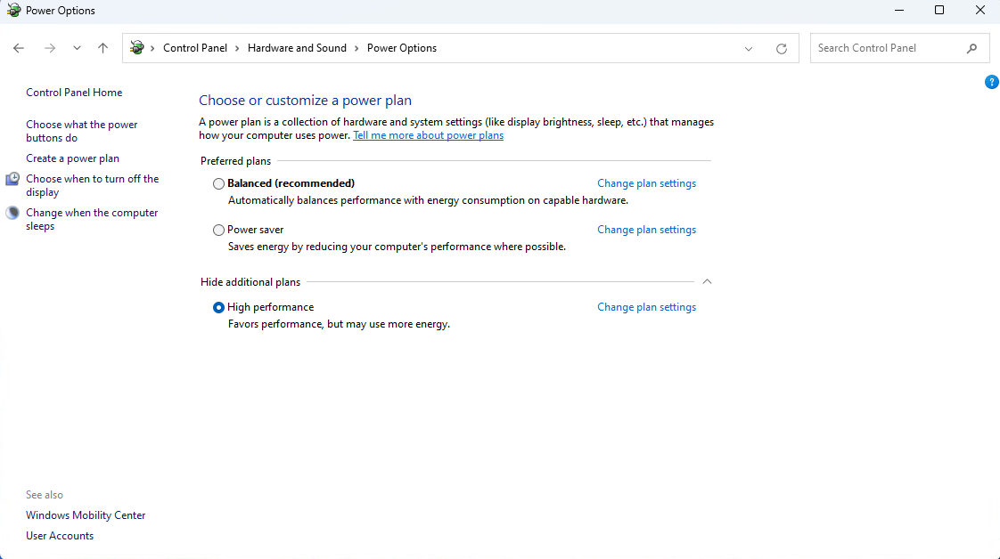
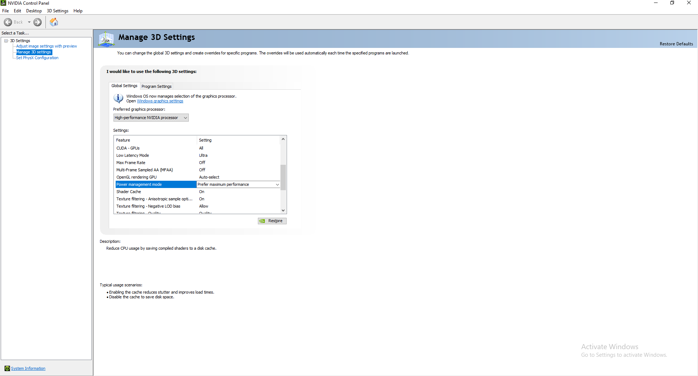
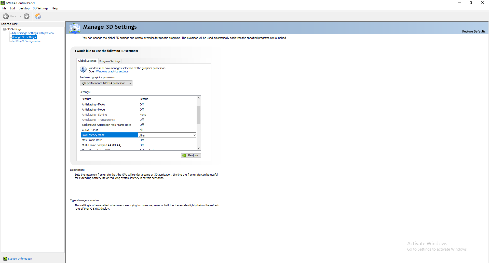
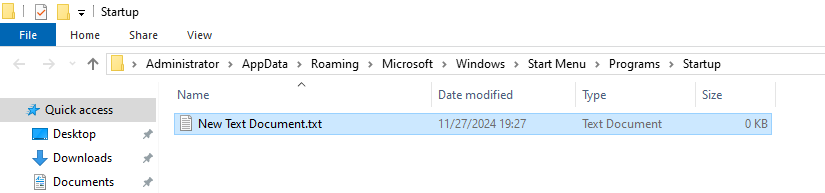
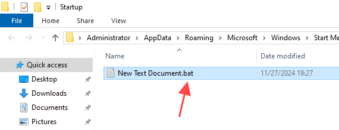
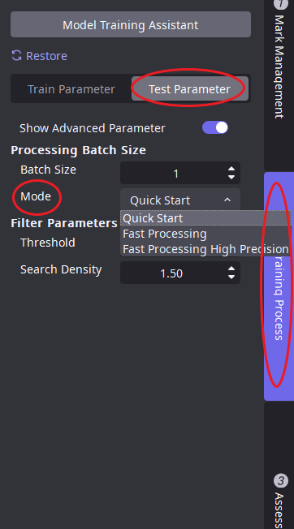
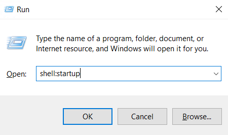
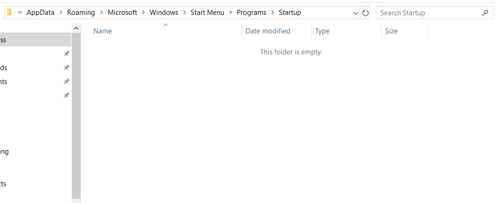
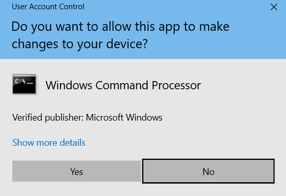

Optimal Performance Guidelines
The actual running speed of AIDI is closely related to the driver settings, deployment environment (hardware environment), and software settings of Nvidia GPU.
The following suggestions are given for this:
Pay attention to heat dissipation;
The Nvidia driver sets a temperature wall of 85 degrees to protect the graphics card.
If the graphics card temperature exceeds 85 degrees, Nvidia will automatically reduce computational performance, resulting in slower inference speed;
For example, AIDI smart cameras do not have active cooling function and require users to add external cooling components, otherwise the inference speed will slow down after running for a period of time;
For example, if the deployment environment is relatively enclosed, due to heat dissipation issues, the inference speed will also slow downSystem power settings (details can be found below);
High performance mode needs to be enabled, otherwise there will be significant fluctuations in inference speedNvidia driver settings (details can be found below);
This setting is beneficial for reducing speed fluctuations and improving inference speedThe size of the inference batch affects the inference speed;
The larger the batch size for high-speed inference, the faster the inference speed of the model body (GPU function processing part).
However, AIDI’s forward image processing and backward processing are all on the CPU, and AIDI does not consider parallel processing of multiple batch sizes for forward or backward processing.
Therefore, as the batch size increases, in most cases, the speed improvement is not significant.In actual deployment scenarios or when testing speed, use the high-speed inference mode;
Extreme reasoning mode is generally more than twice as fast as fast start (excluding Locate modules)
System power settings
Set the power to high-performance mode

Nvidia driver settings
GPU power mode

Low latency mode
Nvidia control panel ->low latency mode ->ultra-high

Lock graphics card frequency
Please note that this setting needs to be reset after shutdown, and it needs to be set every time the device is turned on
-Setting method 1:
Method 1: Search for gpu_set_gpu_mem_clock.bat in the installation directory and run it with administrator privileges

-Setting method 2:
Method 2: If not found, you can generate a setup script by following these steps
① Create a new txt file and copy the following code into the newly created txt file

② Change the txt suffix to bat

③ Run with administrator privileges
If you want to simplify the operation, you can set the startup and self start in Windows (see the appendix for how to set the startup and self start)
@echo off
%1 mshta vbscript:CreateObject("Shell.Application").ShellExecute("cmd.exe","/c %~s0 ::","","runas",1)(window.close)&&exit
Set SuccessFindMaxClock=0
FOR /F "tokens=1,3" %%i IN ('nvidia-smi -q -d SUPPORTED_CLOCKS') DO (
if "%%i" == "Memory" (
echo %%i %%j
Set ClockValue=%%j
Set SuccessFindMaxClock=1
GOTO SetClock
)
)
:SetClock
echo SuccessFindMaxClock %SuccessFindMaxClock%
IF %SuccessFindMaxClock%==1 (
echo "nvidia-smi -lgc %ClockValue%,%ClockValue%"
nvidia-smi -lgc %ClockValue%,%ClockValue%
nvidia-smi -lmc %ClockValue%,%ClockValue%
) else (
echo "Failed to find max clock."
)
pause
Enable calculation mode
If the GPU graphics card is a Quadro or Tesla series graphics card, computing mode can be enabled to maximize the performance of the graphics card If it is a GeForce graphics card, there is no need to set it up
nvidia-smi -dm 1
Speed testing recommendations
Due to the influence of current and temperature, Nvidia graphics cards experience increased speed fluctuations in the first few dozen images of a client. It is recommended to skip the first 100 images during secondary development testing of speed.
Extreme reasoning mode
You can open the project through AIDI, then test parameters ->display advanced parameters ->inference mode ->high-speed inference

Appendix
Windows script startup
Win+R input shell: startup, then press enter

Copy the script to the file that appeared in the previous step

Every time you start up, there will be a pop-up window. Click confirm
